Subbasis einer Initialtopologie
 eine
eine  eine
eine 2. Beweis
2.1. Basis
Sei  stetig, so gilt für eine offene Menge
stetig, so gilt für eine offene Menge
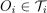
, dass das Urbild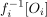
ebenfalls offen ist. Zu den Bedingungen für eine Basis einer Topologie: Es gilt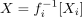
, d.h. ist offen in der induzierten topologie.
Ferner gilt nach Konstruktion, dass der endliche Durchschnitt enthalten ist, und damit insbesondere auch eine Vereinigung
ist offen in der induzierten topologie.
Ferner gilt nach Konstruktion, dass der endliche Durchschnitt enthalten ist, und damit insbesondere auch eine Vereinigung
2.2. Subbasis
folgt aus der Definition, da eine Basis als Subbasis
2.3. universelle Eigenschaft
Sei
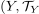
eine Topologie und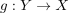
eine Abbildung: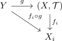
Falls  stetig ist, folgt aus der Komposition stetiger Abbildungen, dass
stetig ist, folgt aus der Komposition stetiger Abbildungen, dass
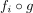
stetig ist. Sei stetig, so zeigen wir nach der Aussage, dass das Urbild der Subbasis offen ist. Sei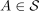
, d.h. für ein offenes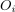
, dann folgt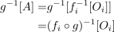
Wegen der stetigkeit von folgt damit, dass
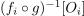
und damit auch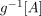
offen ist, d.h. ist stetig
2.4. wohldefiniert
folgt aus dem axiom schema of specification